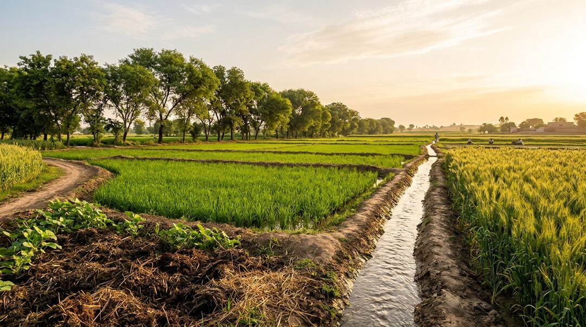
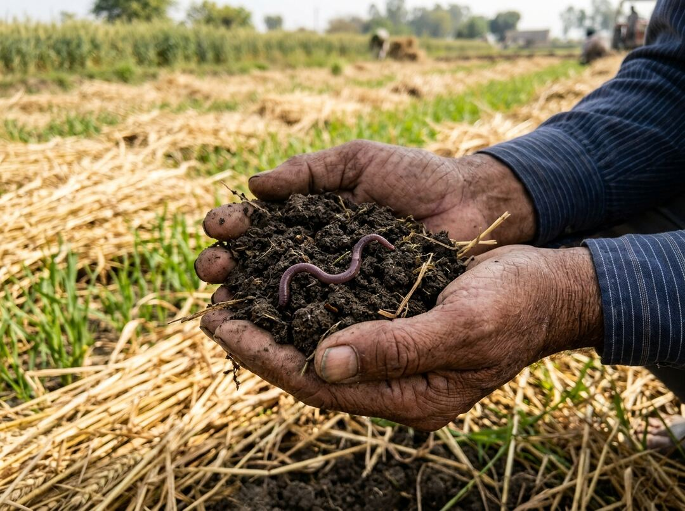

District Narowal · Punjab, Pakistan
REGENERATIVE FARMING LEARNING HUB
احیائی کاشتکاری کا تعلیمی مرکز
A Practical Digital Learning Resource for Farmers of Narowal, Punjab, Pakistan.
Narowal District Interactive Crop Library
Explore all 19 handbook crops with growth-stage photos, 12-month Narowal calendar, side-by-side comparison, and regenerative rotation planner.
Illustrated Bilingual Field Identification Guide
Four field libraries for Narowal: Beneficial Insects, Harmful Pests, Farm Birds, and Weeds, Herbs & Useful Plants — plus a guided field identifier.
Interactive Home Farm Lab
10 hands-on screening activities using everyday household and farm items, plus 7 practical calculators and farm logs for Narowal.
Interactive Farm Simulation & Learning Centre
Experiment locally in your browser with 6 Narowal farm simulations, verified training videos, 3-mode bilingual quizzes, and printable module summaries.
17-Chapter Farmer Education Course
Based directly on the Narowal Regenerative Farming Handbook. Tap any chapter to open expandable bilingual lessons (Parts A–J) and a 3-question check.
15 Practical Learning Sections
Tap any card to open clear, step-by-step field guidance for Narowal farms.
See the Difference in Your Field
Walk your field after rain and compare healthy living soil with strained land.

| Field Check | Healthy Regenerative Field | Warning Signs to Watch |
|---|
District Narowal Bilingual Field Handbook
Read or download the full 21-page English & Urdu handbook with local kanal and maund guidance.